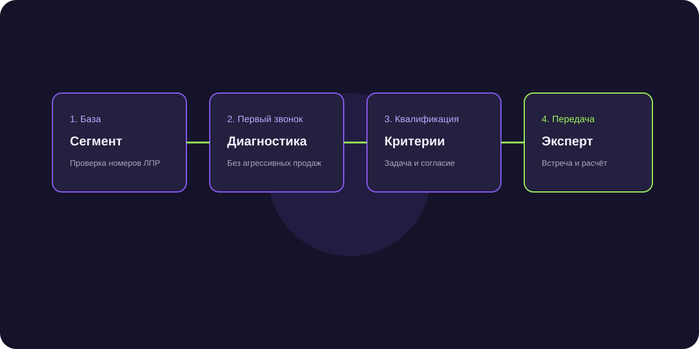

Почему холодные звонки умирают в B2B: спам-фильтры операторов и современные альтернативы
Дозвон до ЛПР упал до катастрофических 4–6%. Спам-блокировки операторов и умные голосовые секретари делают классический телемаркетинг убыточным. Разбираем причины и замену.

Короткий ответ
Холодные звонки теряют эффективность из-за массового внедрения спам-фильтров операторов связи (Яндекс Защитник, Тинькофф Секретарь, Сбер), которые автоматически блокируют незнакомые номера, а также из-за изменения культуры коммуникаций: руководители предпочитают асинхронные текстовые сообщения в Telegram, которые можно прочитать в удобное время.
Умные ассистенты и автоответчики как непреодолимый барьер
Более 65% смартфонов в РФ оснащены голосовыми помощниками, перехватывающими вызовы с незнакомых номеров. Менеджер тратит энергию на разговор с роботом вместо реального ЛПР.
Психология вторжения: почему звонок без предупреждения раздражает
Звонок требует немедленного внимания и отрывает директора от совещания. Текстовое сообщение в мессенджере уважает личное время и дает возможность ознакомиться с оффером без давления.
Чем заменить холодные звонки в 2026 году
- Персонализированный аутрич в Telegram и WhatsApp.
- Умные прогревающие цепочки в email.
- Экспертный контент и лид-магниты в профессиональных сообществах.
- Партнерские продажи и кросс-промоушн со смежными бизнесами.
Частые вопросы по теме
Умерли ли холодные звонки окончательно?
Они работают только в очень узких нишах с гигантским средним чеком (от десятков миллионов), где менеджер детально готовится к звонку неделями.
Какова сейчас средняя стоимость лида с холодных звонков?
С учетом зарплат операторов и базы стоимость лида с телемаркетинга часто превышает 4 000–7 000 ₽, что в 3–5 раз дороже аутрича в чатах.
Снижение стоимости привлеченной встречи с 8 500 до 1 900 ₽
Компания распустила неэффективный колл-центр из 6 человек и перешла на автоматизированный B2B-аутрич в Telegram, увеличив число закрытых сделок на 40%.